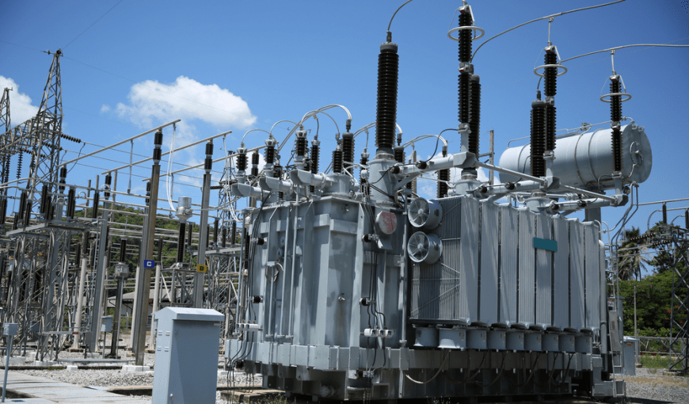
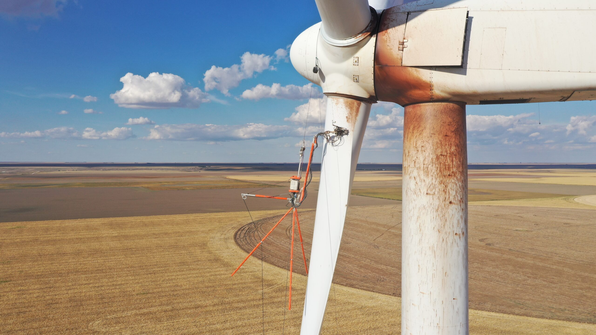
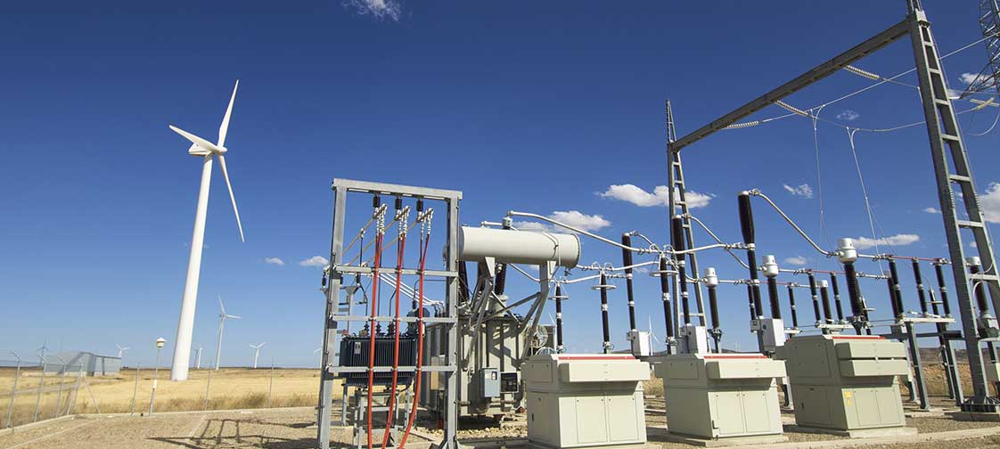
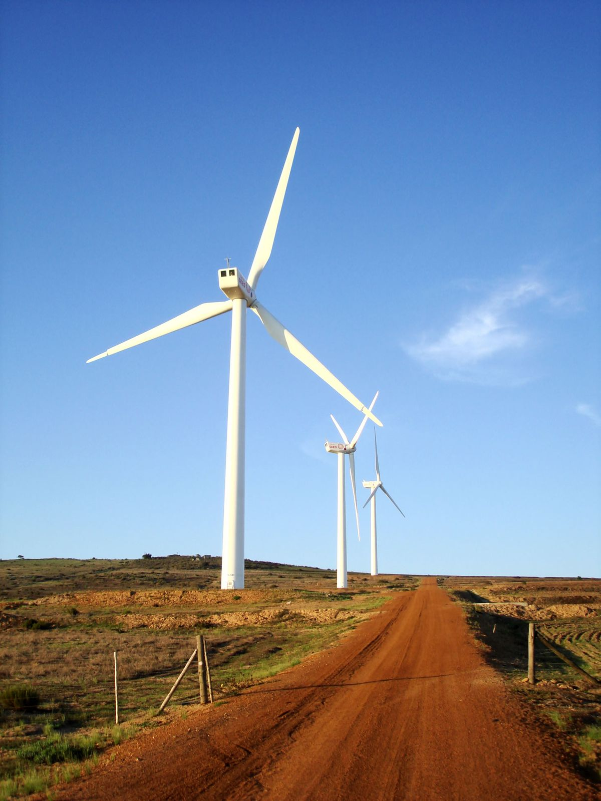
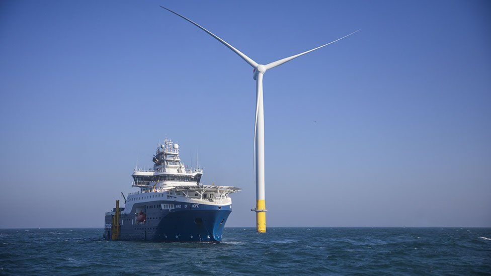
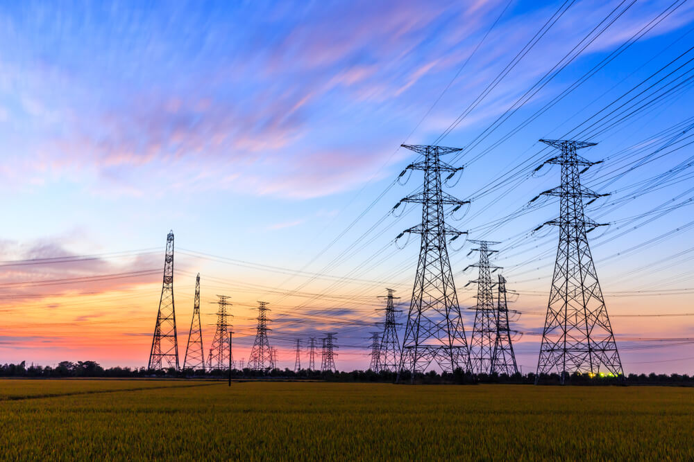
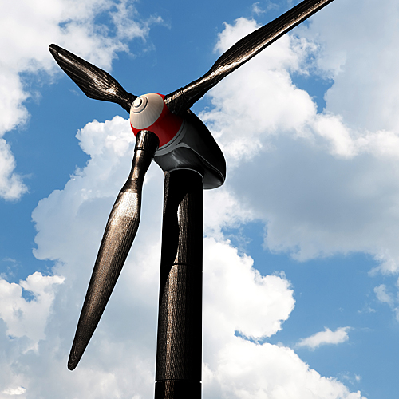
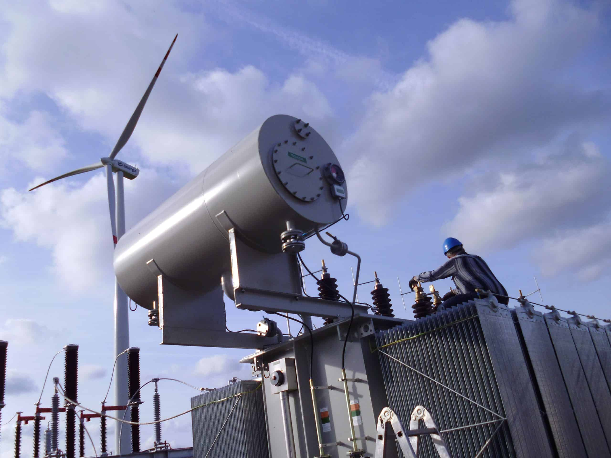
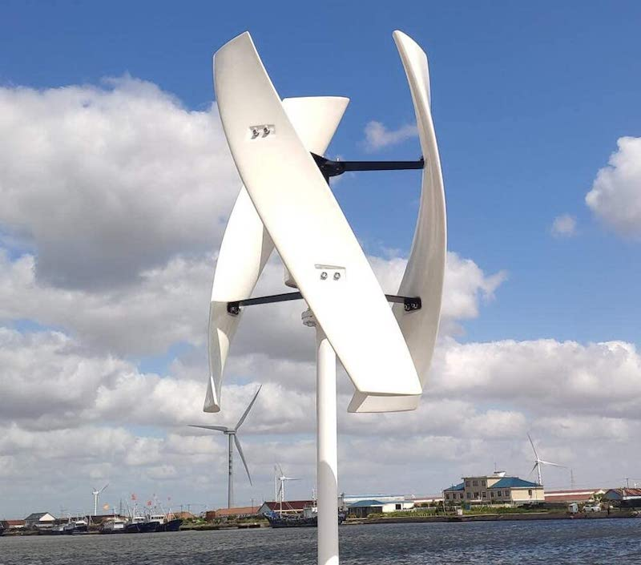

Vēja ģeneratori |

Instalācijas elektrostacijām |

Apkope vēja ģeneratoriem |
|||||||||
|---|---|---|---|---|---|---|---|---|---|---|---|
Ventus SRX-121.jpg)
Viens no Ventusfit pirmajiem vēja ģeneratoru dizainiem. Turbīnai ir maiņstrāvas ģenerātors, kas var efektīvi saražot elektrību, lai atpelnītu instalācijas un ražošanas maksu. Tā leņķiskajā motorā ietilpst daudzas detaļas no nerūsējošā tērauda. Izmantojot to mūsu pirmajās elektrostacijās, secinājām ka tas ir viens no labākām izvēlēm elektrostacijām kurām vēlama retāka apkope. Latvijas apstākļos šis ģenerators perfekti strādā arī vidēji vējainās vietās. Īpaši izstrādāts vēja elektrostacijām, kas atrodas apgabalos ar sarežģītu piekļuvi apkopei, Ventus SRX-121 ir ideāls risinājums maksimālai enerģijas ražošanai un efektivitātei pat vissarežģītākajās vidēs. Šis novatoriskais vēja turbīnas modelis, kas būvēts ar progresīvām tehnoloģijām un izcilu inženieriju, lepojas ar nepārspējamu izturību un uzticamību. Tā uzlabotajās funkcijās ietilpst izturīgs dizains, kas var izturēt skarbos laikapstākļus, mūsdienīga vadības sistēma optimālai veiktspējai un viegli piekļūt komponenti vienkāršotai apkopei. Cena: no 2 000 000 € Pieejamība: 48 noliktavā |
Vēja elektrostacijas, to elementu instalācija
Mūsu pieredzējušo uzstādīšanas speciālistu komanda cenšas nodrošināt, lai katra vēja turbīna tiktu uzstādīta droši un efektīvi, ievērojot visus attiecīgos noteikumus un vadlīnijas. Mēs izmantojam jaunākos rīkus un tehnikas, lai nodrošinātu, ka katra instalācija tiek veikta atbilstoši augstākajiem kvalitātes un uzticamības standartiem. Mēs piedāvājam virkni uzstādīšanas komplektu, kas atbilst jebkura vēja elektrostacijas projekta vajadzībām, sākot no maza mēroga dzīvojamo māju instalācijām līdz liela mēroga komerciālām darbībām. Mūsu cenas ir balstītas uz katras iekārtas unikālajām prasībām, tostarp tādiem faktoriem kā projekta apjoms un sarežģītība, vēja elektrostacijas atrašanās vieta un klienta īpašās vajadzības. Uzņēmumā Ventusfit mēs esam apņēmušies saviem klientiem nodrošināt augstākās kvalitātes uzstādīšanas pakalpojumus par godīgu un konkurētspējīgu cenu. Sazinieties ar mums jau šodien, lai uzzinātu vairāk par mūsu instalācijas pakotnēm un cenu iespējām. 
|
IekārtasMūsu tīrīšanas iekārtas ir izstrādātas, lai apmierinātu īpašās vēja enerģijas darbības vajadzības, nodrošinot efektīvus tīrīšanas risinājumus, kas ir droši un ērti lietojami. Mēs piedāvājam virkni tīrīšanas iekārtu, tostarp specializētas birstes, sprauslas un tīrīšanas līdzekļus, kas paredzēti netīrumu, gružu un citu piesārņotāju noņemšanai no vēja turbīnu lāpstiņām un cita aprīkojuma. Visas mūsu tīrīšanas iekārtas ir ražotas atbilstoši augstākajiem kvalitātes un izturības standartiem, nodrošinot, ka tās spēj izturēt stingrās vēja enerģijas darbības prasības. Mūsu aprīkojums ir izstrādāts tā, lai to būtu viegli lietot un uzturēt, padarot to par rentablu risinājumu vēja enerģijas uzturēšanai. Uzņēmumā Ventusfit mēs saprotam vēja enerģijas iekārtu regulāras apkopes nozīmi, tāpēc mēs piedāvājam virkni augstas kvalitātes tīrīšanas iekārtu, kas ir izstrādātas, lai apkope būtu vienkārša un efektīva. Sazinieties ar mums jau šodien, lai uzzinātu vairāk par mūsu tīrīšanas aprīkojumu un to, kā tas var sniegt labumu jūsu vēja enerģijas izmantošanai. |
|||||||||
Ventus SRX-200Ventus SRX-200 ir jaunākais papildinājums Ventusfit vēja turbīnu saimei, kas izstrādāts, lai nodrošinātu maksimālu enerģijas ražošanu un efektivitāti mazākā, rentablākā komplektā. Pateicoties modernajai aerodinamikai un progresīvajām tehnoloģijām, SRX-200 ģenerē vairāk elektroenerģijas nekā iepriekšējie modeļi, padarot to par lielisku izvēli plašam vēja enerģijas lietojumu klāstam. Viena no galvenajām SRX-200 iezīmēm ir tā efektīvā aerodinamika, kas ļauj ģenerēt vairāk enerģijas ar mazākiem asmeņiem. Tas samazina turbīnas kopējo svaru, padarot to vieglāku un lētāku uzstādīšanu. Turklāt SRX-200 ir lielāki, vieglāki asmeņi, kas paredzēti, lai uztvertu vairāk vēja enerģijas un efektīvāk pārvērstu to elektroenerģijā. Pateicoties tā progresīvajai tehnoloģijai, Ventus SRX-200 ir arī ļoti rentabls. Tas izmanto jaunākās vadības sistēmas, lai optimizētu enerģijas ražošanu, vienlaikus samazinot uzturēšanas un ekspluatācijas izmaksas. Tas padara to par ideālu izvēli vēja elektrostacijām, kuras vēlas samazināt kopējās izmaksas un uzlabot to rezultātu. Cena: no 800 000 € Pieejamība: 80 noliktavā |
ApakšstacijasUzņēmumā Ventusfit mēs piedāvājam virkni augstas kvalitātes apakšstaciju, kas izstrādātas, lai nodrošinātu drošu un efektīvu elektroenerģijas pārvadi vēja elektrostacijām. Mūsu apakšstacijas ir projektētas un ražotas atbilstoši augstākajiem kvalitātes un izturības standartiem, nodrošinot, ka tās spēj izturēt stingrās vēja enerģijas darbības prasības. Mūsu apakšstacijas ir pieejamas dažādos izmēros un jaudas, padarot tās piemērotas jebkura mēroga vēja elektrostacijām. Neatkarīgi no tā, vai izmantojat maza mēroga dzīvojamo vēja enerģijas sistēmu vai liela mēroga komerciālu vēja parku, mums ir īstā apakšstacija, kas atbilst jūsu vajadzībām. Mūsu apakšstacijas ir izstrādātas, lai nodrošinātu efektīvu un rentablu elektroenerģijas pārvadi, samazinot enerģijas zudumus un optimizējot enerģijas plūsmu. Mēs izmantojam progresīvas tehnoloģijas un materiālus, lai nodrošinātu, ka mūsu apakšstacijas nodrošina optimālu veiktspēju, vienlaikus samazinot ietekmi uz vidi.  |
Robotizētā tīrīšana - VentusClean |
|||||||||
Ventus Dynamo 700Iepazīstinām ar Ventus Dynamo 700 – līdz šim lielāko un jaudīgāko Ventusfit vēja turbīnas modeli. Izstrādāts, lai nodrošinātu maksimālu enerģijas ražošanu un efektivitāti liela mēroga vēja elektrostacijām, Dynamo 700 ir ideāls risinājums liela apjoma elektroenerģijas ražošanai. Ventus Dynamo 700 ar savu milzīgo izmēru un modernajām tehnoloģijām spēj saražot ievērojami lielāku elektroenerģijas daudzumu nekā iepriekšējie modeļi. Tas tiek panākts, pateicoties tā modernajai aerodinamikai un lielākam rotora diametram, kas uztver vairāk vēja enerģijas un ar lielāku efektivitāti pārvērš to elektroenerģijā. Papildus iespaidīgajām enerģijas ražošanas iespējām Ventus Dynamo 700 ir arī ļoti izturīgs un uzticams. Tā izturīgais dizains ir veidots tā, lai izturētu ekstremālākos laikapstākļus, un tā uzlabotās vadības sistēmas vienmēr nodrošina optimālu veiktspēju. Tas padara to par ideālu izvēli liela mēroga vēja elektrostacijām, kur uzticamība un vienmērīga enerģijas ražošana ir ļoti svarīga. Cena: no 2 400 000 € Pieejamība: 20 noliktavā |
Pārvades līnijasUzņēmumā Ventusfit mēs piedāvājam virkni augstas kvalitātes pārvades līniju, kas izstrādātas, lai nodrošinātu drošu un efektīvu elektroenerģijas pārvadi vēja elektrostacijām. Mūsu pārvades līnijas ir izstrādātas un ražotas atbilstoši augstākajiem kvalitātes un izturības standartiem, nodrošinot, ka tās spēj izturēt stingrās vēja enerģijas darbības prasības. Mūsu elektropārvades līnijas ir pieejamas dažādos izmēros un jaudas, padarot tās piemērotas jebkura mēroga vēja elektrostacijām. Neatkarīgi no tā, vai izmantojat maza mēroga dzīvojamo vēja enerģijas sistēmu vai liela mēroga komerciālu vēja parku, mums ir piemērota pārvades līnija, kas atbilst jūsu vajadzībām. Mūsu pārvades līnijas ir izstrādātas, lai nodrošinātu efektīvu un rentablu enerģijas pārvadi, samazinot enerģijas zudumus un optimizējot enerģijas plūsmu. Mēs izmantojam progresīvas tehnoloģijas un materiālus, lai nodrošinātu, ka mūsu pārvades līnijas nodrošina optimālu veiktspēju, vienlaikus samazinot ietekmi uz vidi. Uzņēmumā Ventusfit mēs saprotam, ka pārvades līnijas ir būtiska jebkuras vēja enerģijas darbības sastāvdaļa, tāpēc mēs esam apņēmušies nodrošināt saviem klientiem augstākās kvalitātes produktus un pakalpojumus. Sazinieties ar mums jau šodien, lai uzzinātu vairāk par mūsu pārvades līnijām un to, kā tās var sniegt labumu jūsu vēja elektrostacijai.  |
||||||||||
Ventus XCF-700Ventus XCF-700 ir liela mēroga vēja turbīnas modelis, kam ir vairākas uzlabotas funkcijas, tostarp rotori, kas izgatavoti no pastiprinātas oglekļa šķiedras. Šis novatoriskais dizains nodrošina izcilu izturību un veiktspēju, padarot to par ideālu izvēli liela mēroga vēja enerģijas darbībām. Pastiprinātās oglekļa šķiedras izmantošana Ventus XCF-700 rotora konstrukcijā nodrošina vairākas būtiskas priekšrocības. Pirmkārt un galvenokārt, tas nodrošina uzlabotu izturību un ilgmūžību pat vissmagākajos laika apstākļos. Turklāt šī uzlabotā materiāla izmantošana ļauj iegūt vieglāku rotoru, kas savukārt nodrošina lielāku efektivitāti un enerģijas ražošanu. Papildus novatoriskajam rotora dizainam Ventus XCF-700 ir arī uzlabotas vadības sistēmas un mūsdienīga aerodinamika, kas darbojas kopā, lai nodrošinātu optimālu enerģijas ražošanu un efektivitāti. Tā uzticamā veiktspēja un darbība, kas prasa zemu apkopi, padara to par ideālu izvēli liela mēroga vēja enerģijas operācijām, kur ir būtiska pastāvīga enerģijas ražošana. Kopumā Ventus XCF-700 ir vismodernākais vēja turbīnas modelis, kas izstrādāts, lai nodrošinātu izcilu izturību, efektivitāti un enerģijas ražošanu. Armētās oglekļa šķiedras izmantošana tā rotora konstrukcijā ir tikai viens progresīvo tehnoloģiju un inovāciju piemērs, kas to atšķir no citām mūsdienu tirgū esošajām vēja turbīnām. Cena: no 3 000 000 € Pieejamība: pēc pasūtījuma |
TransformatoriUzņēmumā Ventusfit mēs piedāvājam virkni augstas kvalitātes elektrisko transformatoru, kas izstrādāti, lai nodrošinātu uzticamu un efektīvu jaudas pārveidošanu vēja elektrostacijām. Mūsu transformatori ir izstrādāti un ražoti atbilstoši augstākajiem kvalitātes un izturības standartiem, nodrošinot, ka tie spēj izturēt stingrās vēja enerģijas darbības prasības. Mūsu elektriskie transformatori ir pieejami dažādos izmēros un jaudas, padarot tos piemērotus jebkura mēroga vēja elektrostacijām. Neatkarīgi no tā, vai izmantojat maza mēroga dzīvojamo vēja enerģijas sistēmu vai liela mēroga komerciālu vēja parku, mums ir piemērots transformators, kas atbilst jūsu vajadzībām. Papildus augstajai veiktspējai un uzticamībai mūsu elektriskie transformatori ir izstrādāti arī tā, lai tie būtu energoefektīvi un videi draudzīgi. Mēs izmantojam tikai vismodernākos materiālus un tehnoloģijas, lai nodrošinātu, ka mūsu transformatori nodrošina optimālu jaudas pārveidošanas efektivitāti, vienlaikus samazinot enerģijas izšķērdēšanu. Uzņēmumā Ventusfit mēs saprotam, ka elektriskie transformatori ir būtiska jebkuras vēja enerģijas darbības sastāvdaļa, tāpēc mēs esam apņēmušies nodrošināt saviem klientiem augstākās kvalitātes produktus un pakalpojumus. Sazinieties ar mums jau šodien, lai uzzinātu vairāk par mūsu elektriskajiem transformatoriem un to, kā tie var sniegt labumu jūsu vēja elektrostacijai. 
|
||||||||||
Ventus HeliumVentus Helium ir maza mēroga spirālveida vēja turbīna, kas īpaši izstrādāta lietošanai dzīvojamās telpās. Ar savu novatorisko spirālveida dizainu un progresīvām tehnoloģijām šis vēja turbīnas modelis nodrošina unikālu risinājumu māju īpašniekiem, kuri vēlas paši ražot elektroenerģiju. Hēlija spirālveida dizains ļauj uztvert vēja enerģiju no visiem virzieniem, nodrošinot efektīvāku un konsekventāku enerģijas izvadi salīdzinājumā ar tradicionālajām vēja turbīnām. Tas kopā ar tā kompakto izmēru un zemo trokšņa līmeni padara Helium par ideālu izvēli māju īpašniekiem, kuri vēlas ražot savu atjaunojamo enerģiju, vienlaikus samazinot ietekmi uz vidi. Papildus efektīvajam dizainam Ventus Helium ir arī ļoti izturīgs un prasa mazu apkopi. Tā vieglā konstrukcija un vienkāršais uzstādīšanas process atvieglo tā uzstādīšanu un apkopi, nodrošinot, ka māju īpašnieki var baudīt uzticamu un efektīvu enerģijas ražošanu turpmākajos gados. Kopumā Ventus Helium ir visprogresīvākais vēja turbīnas modelis, kas māju īpašniekiem nodrošina novatorisku risinājumu atjaunojamās enerģijas ražošanai. Ar savu spirālveida dizainu, progresīvām tehnoloģijām un zemu apkopes darbību Helium ir ideāla izvēle ikvienam, kas vēlas samazināt ietekmi uz vidi un ietaupīt naudu par saviem enerģijas rēķiniem. Cena: 700 € Pieejamība: 240 noliktavā |